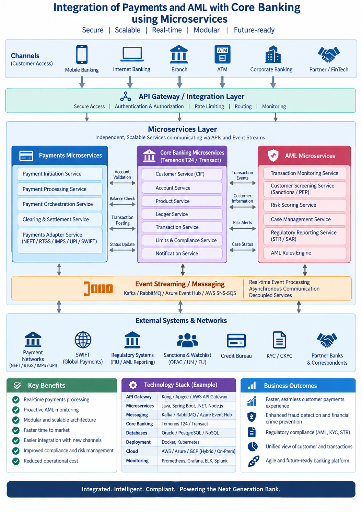

Selected Transformation Program
Core Banking, Payments & AML Integration
🏦 Domain: Banking / Financial Services
💼 Role: Program / Project Manager
🔄 Transformation: Legacy Integration → API & Microservices
💳 Scope: Core Banking, Payments & AML
🧩 Architecture: Microservices / API-led Integration
Business Challenge
The banking environment required reliable integration between Core Banking,
payment channels and Anti-Money Laundering (AML) services. Legacy point-to-point
interfaces created tight coupling, increased dependencies and made it difficult
to introduce new payment capabilities or evolve compliance services independently.
The modernization program introduced API-led, microservices-based integration
to decouple banking capabilities, enable reusable services, improve transaction
visibility and support scalable, secure and resilient processing.
Program Scope
- Integrate Core Banking with payment channels and payment processing services.
- Integrate payment transactions with AML screening and monitoring services.
- Decompose selected integration capabilities into independently deployable microservices.
- Establish API-led integration and standardized API contracts.
- Implement transaction validation, routing and orchestration.
- Implement synchronous and asynchronous integration patterns.
- Establish transaction status, exception and reconciliation processing.
- Implement authentication, authorization, audit and security controls.
- Establish monitoring, logging and operational support.
- Manage deployment, Go-Live, Hypercare and continuous improvement.
Business Objectives
- Enable scalable integration between Core Banking, Payments and AML.
- Reduce dependency on tightly coupled legacy interfaces.
- Improve payment transaction processing and visibility.
- Enable reusable APIs and microservices.
- Improve AML screening integration and transaction traceability.
- Improve resilience, fault isolation and operational recovery.
- Accelerate delivery of new payment and compliance capabilities.
Core Banking Integration Architecture
The target architecture uses API-led integration and domain-oriented
microservices to connect Core Banking, payment channels, payment processing,
AML screening and enterprise services with controlled transaction flow,
security, observability and resilience.

Core Banking – Payments & AML Microservices Integration
Architecture Components
- Core Banking: Customer accounts, balances, transaction posting and account services.
- Payment Channels: Mobile, internet banking, branch, ATM and digital channels.
- Payment Service: Payment initiation, validation, routing and orchestration.
- AML Screening Service: Transaction screening, risk evaluation, alerts and compliance workflow integration.
- Customer / Account Service: Customer and account information required for validation.
- API Gateway: Secure API exposure, authentication, routing, throttling and traffic management.
- Integration Services: Transformation, orchestration, routing and system connectivity.
- Message Broker: Asynchronous processing, event distribution and system decoupling.
- Transaction Data: Service-specific transaction state, audit and processing information.
- Observability: Centralized logging, monitoring, tracing, alerting and operational dashboards.
End-to-End Payment & AML Transaction Flow
01 — Payment Initiation
- Customer initiates a payment through a banking channel.
- Request is authenticated and validated.
- Payment request is submitted through the API layer.
02 — Payment Validation
- Validate customer and account information.
- Validate available balance, transaction limits and mandatory payment information.
- Apply transaction business rules.
03 — AML Screening
- Send relevant transaction information to AML screening.
- Perform applicable sanctions, watchlist and transaction-risk checks.
- Receive screening response and risk outcome.
- Route transactions requiring additional review according to configured compliance workflows.
04 — Core Banking Processing
- Approved transactions are submitted to Core Banking.
- Account balances and transaction records are updated.
- Core Banking transaction status is returned to the integration layer.
05 — Payment Completion
- Payment status is propagated to the originating channel.
- Customer receives the applicable transaction status.
- Transaction events are recorded for audit and operational monitoring.
Microservices Decomposition
- Customer Service
- Account Service
- Payment Initiation Service
- Payment Validation Service
- Payment Routing Service
- AML Screening Integration Service
- Transaction Status Service
- Notification Service
- Reconciliation Service
- Audit / Transaction History Service
API & Integration Strategy
- REST APIs for synchronous business interactions.
- Event-driven messaging for asynchronous processing.
- API Gateway for controlled API access.
- Standardized API contracts and versioning.
- Centralized authentication and authorization.
- Correlation IDs for end-to-end transaction tracing.
- Idempotency controls for payment transaction processing.
- Retry, timeout and circuit-breaker patterns for resilience.
AML Integration & Compliance Flow
- Identify transactions requiring AML screening.
- Transform transaction data into the AML service contract.
- Submit transactions for screening.
- Receive screening result and risk response.
- Route approved transactions for further processing.
- Route transactions requiring investigation according to compliance workflows.
- Maintain transaction and screening audit information.
- Monitor screening failures and integration exceptions.
Resilience & Exception Management
- Timeout and retry management.
- Circuit-breaker and fault-isolation patterns.
- Duplicate transaction prevention.
- Failed-message handling and controlled reprocessing.
- Transaction reconciliation between Core Banking and payment services.
- AML response timeout and exception handling.
- End-to-end transaction correlation and traceability.
Security & Governance
- API authentication and authorization.
- Encryption for data in transit and appropriate protection for sensitive data.
- Role-based access controls.
- Secure secrets and credential management.
- Transaction audit logging.
- API and service-level security controls.
- Controlled access to customer and transaction information.
- Security, architecture and compliance review checkpoints.
Integration Lifecycle
01 — Discovery & Assessment
- Inventory existing Core Banking, Payments and AML interfaces.
- Identify point-to-point dependencies and integration pain points.
- Assess transaction volumes, performance and availability requirements.
02 — Architecture & Design
- Define microservices boundaries and API contracts.
- Define synchronous and asynchronous integration patterns.
- Define security, resilience and observability architecture.
03 — Build & Integration
- Develop microservices and APIs.
- Implement Core Banking and AML integrations.
- Configure messaging, routing and transaction orchestration.
04 — Testing & Validation
- API and service testing.
- End-to-end payment transaction testing.
- AML screening and exception testing.
- Performance, resilience and security testing.
05 — Deployment & Go-Live
- Execute production deployment and cut-over.
- Validate critical payment and AML transaction flows.
- Establish production monitoring and support.
06 — Hypercare & Continuous Improvement
- Monitor transaction health and service performance.
- Resolve production issues and integration exceptions.
- Optimize performance, reliability and scalability.
- Extend reusable microservices for future banking capabilities.
Program Manager – Roles & Responsibilities
- Program Strategy: Define integration modernization roadmap, scope, milestones and business outcomes.
- Architecture Governance: Coordinate decisions across Core Banking, Payments, AML, APIs, microservices and integration platforms.
- Stakeholder Management: Coordinate business, banking operations, architecture, engineering, security, risk, compliance and vendor teams.
- Dependency Management: Manage dependencies between Core Banking, payment channels, AML services and enterprise systems.
- Delivery Management: Govern development, testing, deployment and production transition.
- Risk Management: Manage transaction, security, compliance, performance and operational risks.
- Release Management: Coordinate release planning, cut-over, Go-Live and Hypercare.
- Operational Governance: Establish monitoring, incident, problem, reconciliation and support processes.
- Vendor Management: Coordinate Core Banking, AML, payment and integration vendors.
- Continuous Improvement: Drive API reuse, microservices modernization, automation, resilience and operational improvements.
Technology Landscape
- Core Banking Platform
- Payment Processing Platforms
- AML / Transaction Monitoring Platform
- Microservices Architecture
- Java / Spring Boot
- REST APIs
- API Gateway
- Message Broker / Event Streaming
- Docker / Kubernetes
- Cloud Platform
- CI/CD and DevOps
- Monitoring, Logging & Distributed Tracing
Key Integration Metrics
- Payment transaction success rate.
- API response time and transaction latency.
- AML screening response time.
- Integration availability.
- Failed and retried transactions.
- Reconciliation exceptions.
- Production incidents and recurring defects.
- Service recovery time.
- API and microservice availability.
- Transaction traceability and audit completeness.
Transformation Outcome
Established a scalable API-led microservices integration capability
connecting Core Banking, Payments and AML, reducing dependency on
tightly coupled interfaces while improving transaction processing,
service resilience, security, monitoring and the ability to introduce
future banking capabilities.
Program Management Takeaway:
Modernizing Core Banking integration is not simply an API implementation.
Successful delivery requires domain-aligned microservices, transaction
integrity, AML and compliance integration, resilience engineering,
security, observability, reconciliation and strong coordination across
banking, technology and operational stakeholders.